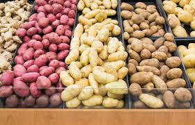
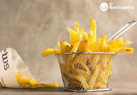
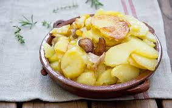

La patata es uno de los alimentos más consumidos del mundo. Fue cultivada por primera vez hace más de 7.000 años por civilizaciones de América del Sur, especialmente en la zona de los Andes.
Las patatas llegaron a Europa en el siglo XVI después de los viajes de exploración a América. Al principio muchas personas no confiaban en este alimento, pero con el tiempo se convirtió en un ingrediente fundamental en muchas cocinas.
Actualmente existen más de 4.000 variedades diferentes de patatas en el mundo. Pueden variar en tamaño, forma, color e incluso sabor.
Las patatas son una buena fuente de energía porque contienen carbohidratos. También aportan vitamina C, potasio y otros nutrientes importantes para el cuerpo.
Este alimento es extremadamente versátil, ya que se puede cocinar de muchas maneras diferentes.
En muchos países del mundo las patatas forman parte de platos tradicionales y se consideran un alimento básico en la dieta diaria.
El país que más patatas consume por persona es Bielorrusia.
1. Pela las patatas.
2. Córtalas en tiras.
3. Fríelas en aceite caliente.
4. Añade sal al gusto.
| Nutriente | Cantidad |
|---|---|
| Calorías | 77 kcal |
| Vitamina C | 19 mg |
| Potasio | 425 mg |


